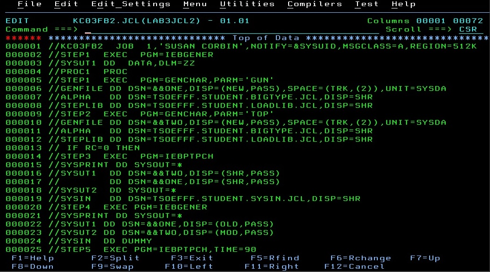

My name is Susan Corbin and I am a 3rd year student from Georgian College in Barrie, Ontario. At this time I am looking for a co-op placement which could eventually lead to a full time position. This website is intended to introduce you to the work completed and the services available by me as Silver Lining Design and Programming. Silver Lining Design and Programming provides services including website design and production, mainframe programming animation services work with java program language and project management. All services are provided in a professional and timely manner with an eye on customer satisfaction in everything I do.
I have always had an interest in computers and how they work. To be able to work with computers for a living is very exciting to me. Providing good quality service is important to me because in business today it can be sadly lacking. A happy customer is the best result you can possibly have after completing a project and having that keeps me working as hard as I possibly can.
Reliable, hardworking computer student wanting to develop mainframe skills or any position that will utilize current academic knowledge and skills with computer technologies. Possess excellent work habits and enthusiasm to deliver quality workmanship and problem solving scenarios.
After many years in the business world and ten years as a real estate agent, I returned to school in 2010 to pursue a new career in Computer Programming. It has been a challenging and exhilirating experience which I am enjoying immensely.
For further information please feel free to contact me. You will be pleased with my work and the excellent service that I provide.
1970 Champlain Road,
Tiny, Ontario,
L9M 0B6
Phone: (705) 549-6674
Cell: (705) 427-6086
E-Mail: susan.corbin17@gmail.com


I have completed several websites for clients in the Toronto area. They range from aerial photographers to restaurants and even a culinary school. My work on these websites included copywriting and logo design as well as the actual coding of the website itself. As a result of this work I would be interested in a position as a web designer and feel that I would be of great assistance in that regard.


At Georgian College I have taken courses in COBOL, Assembler and JCL. These courses are used in mainframe programming. I found them very interesting and challenging. The COBOL was especially of interest to me. I found it very fun to do. A position as a mainframe programmer would also be something that I would be interested in pursuing.

I have also taken two courses in Java programming. Java is an integral part of many of the technologies that we use today such as laptops, game consoles and of course the games that go with them, cell phones and the Internet. With this in mind I think a job in the java programming field would be a great way to get into an ever growing field where there seems to be limitless possibilities.

This was a website designed for a new restaurant in Richmond Hill, Ontario. It entailed 5 pages with a 6 photo slideshow on the first page and multiple pictures mixed in with text on the menu page. The text and photos were laid over a blue textured background to give it some depth.
Back to Projects PageThis was a project management assignment completed where we had to follow the System Development Life Cycle (SDLC) of a project from its inception to completion. It involved the introduction of a new computer server into a company replacing two antiquated servers in an office with approximately 30 employees. The installation, testing and transfer to the new server had to be completed without interuption of service to the employees. The entire project was completed using many aspects of Microsoft Project, thus making me very familiar with how it works and the great value it has in the planning and implementation of a project of any size.
Back to Projects Page
This was a Java program written in my Introduction to Object Oriented Programming course at Georgian College. It involved designing a program for a car. There were four classes for the car: Body, Tank, Engine and Transmission. These classes were responsible for saying things like what the oil level and fuel levels were, whether the car doors were open or closed, etc. The abstract class Car took this information and depending on what it found out turned the car on, moved the car forward and backward, shut the car off and other things. There was also a tester that told you the state of the car and gave you a dashboard with all the information on the car i.e. fuel tank level, oil level, etc.
Back to Projects Page
This was a website made for an aerial photographer based out of the GTA. It involved 5 web pages, a slideshow on the home page and approximately 60 photographs of homes and commercial properties divided between two web pages. The residential web page was divided into photographs of houses, seasonal photographs of the same house and pictorial histories of a single house taken over the course of many years and incarnations. I was involved in writing the text for the website, choosing the photos and all layout designs.
Back to Home Page
This was an animation assignment completed in Adobe Flash Professional. It consisted of a Robot made up of individual parts: head, body, arms, hands and propeller. Each body part had three different styles of part. When you clicked on each individual body part, they changed from one style to the next. As well as the body parts changing when you clicked on them, the Robot hovered above the ground with a slight up and down movement in the Robot and movement in the various body parts as well to indicate the slight movement in the Robot. All of this was achieved using ActionScript language with the Flash Professional program.
Back to Home PageThis was a COBOL program in which we had to calculate raises for employees in a company in 2 regions and 10 offices who had been with the company over 10 years. There were approximately 30 employees and about one third were in that category. Within the program I also had to set up headings and set up a sytem that used the current date as input by the user.
Back to Home Page